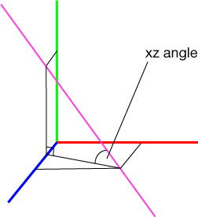
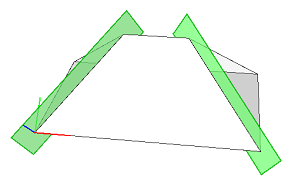
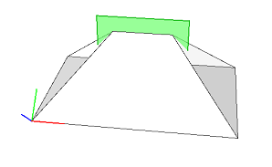

trim attribute
The trim shape attribute consists of two booleans. It is used to control the application of trim planes to the current shape and its successors. Classification of the trim planes depends on the orientation of the edge which was used to define the trim plane (i.e. the shared edge between two pre-component split faces): if the angle to the xz-plane of the pivot is less than 40 degrees, the trim plane is horizontal, otherwise vertical.

Set the attribute to enable or disable the trim planes in the horizontal or vertical direction.
Trim planes are created by a component split and applied using the insert operation, primitive operations, or the trim operation.
Related
Examples
Vertical trim planes

Roof-->
roofHip(45)
comp(f) { all : Face. }
Vertical trim planes are enabled by default. Trim planes are shown in green but not applied.
Horizontal trim planes

Roof-->
roofHip(45)
set(trim.horizontal, true)
set(trim.vertical, false)
comp(f) { all : Face. }
Horizontal trim planes are enabled by switching the trim plane attribute. Trim planes are shown in green but not applied.